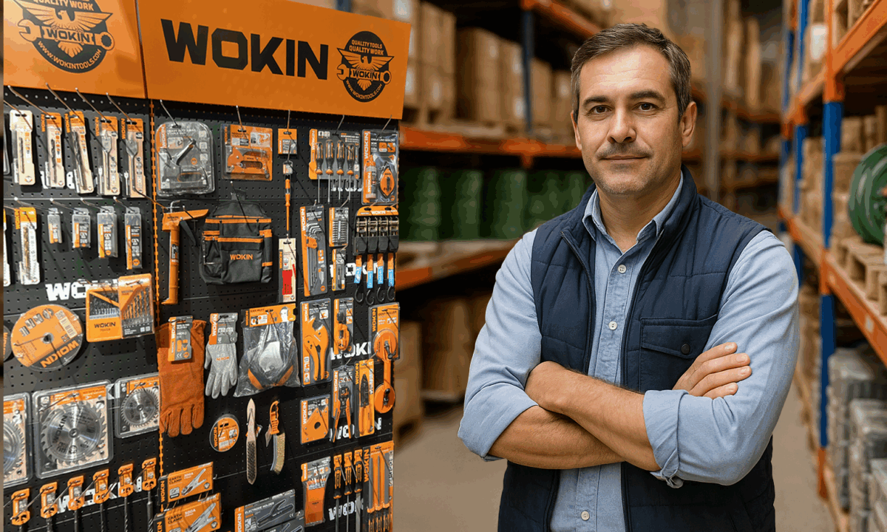

Orientación real
Explicamos alternativas para que cada cliente pueda decidir con más seguridad.
Nuestra historia
Los Maestros nació para acercar materiales confiables y atención clara a familias, especialistas y contratistas de la Región de Coquimbo.

Cómo trabajamos
Explicamos alternativas para que cada cliente pueda decidir con más seguridad.
Mostramos disponibilidad y unidad de venta antes de confirmar la solicitud.
Conocemos el ritmo de las obras y la importancia de cumplir los tiempos.